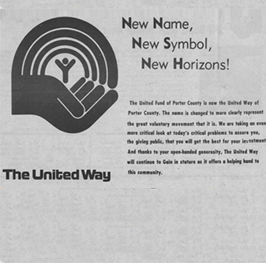

1950
Allan Manford et Warren Goldring, les cofondateurs d'AGF
-
« Allan Manford nourrissait la vive ambition d’investir aux États-Unis, d’une façon qui permettrait à tous les Canadiens d’en profiter. »
- Warren Goldring
-
 1957 AGF met le cap sur les États-Unis
1957 AGF met le cap sur les États-Unis
L’American Growth Fund d’AGF est le premier fonds à investir exclusivement dans des titres des États-Unis. Malgré la suprématie incontestée de l’économie américaine à l’échelle mondiale depuis la fin de la Première Guerre mondiale, les Canadiens peinent à voir son intérêt en matière de placement.
-
AGF tire son nom des initiales de l’American Growth Fund. Crée en 1957, il s’agit du premier fonds du Canada à investir uniquement dans des actions américaines.
-
1957 Lancement des REER la même année
En 1957, les régimes enregistrés d’épargne-retraite (REER) voient le jour afin de permettre aux particuliers de détenir un régime personnel comportant les mêmes avantages fiscaux qu’un régime de retraite collectif.
-
« Warren Goldring a fait pour la gestion canadienne des capitaux ce que Henry Ford a réalisé pour les voitures. Sa vision consistait à mettre à la portée de tous, les compétences spécialisées en gestion de portefeuilles qui étaient réservées aux grands investisseurs. »
The Globe and Mail, 15 avril 2009
-
AGF AGF déterminée à faire une différence au sein des collectivités
L’engagement indéfectible d’AGF envers les collectivités remonte aux années 1950, lorsque la société décide d’appuyer United Way, ou Centraide en français.
En effet, Dr C. C. Goldring, le père de Warren Goldring, a fait partie du premier conseil d’administration du « United Community Fund », qui a été crée en 1956 et a été ultérieurement rebaptisé United Way.